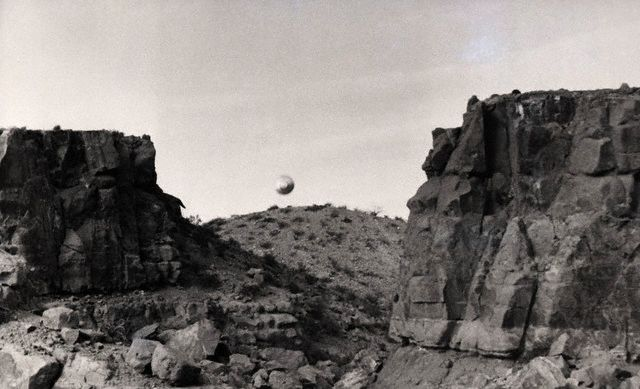

Un radar du NORAD détecte un écho descendre de 30 km vers la
base de l'USAF de Minot (Dakota du Nord), dont les silos à missiles sont
survolés lentement par l'ovni suivi par 3 camions de soldats armés ayant l'ordre de le capturer sans l'endommager.
L'objet décolle à la verticale quand une patrouille de F-106 reçoit l'ordre de l'intercepter. Un officier resté
proche des lieux de l'incident est malade durant 3 jours, plusieurs dizaines de missiles sont mis hors-service et
l'engin restera non-identifié par l'USAF Fowler, Raymond E.: Casebook of a UFO Investigator, Prentice-Hall (New Jersey), 1981, p. 187: < Good, Timothy: "NORAD" in "Collision Course", Above Top Secret, pp. 300-301.
Observation à Bentor Harbor (Michigan)Cas Blue Book n° 11454 non résolu.
Observation à Galesburg, Moline (Illinois)Cas Blue Book n° 11460 non résolu.
A Leominster (Massachussetts), 2 témoins observent un
ovni pendant , depuis leur voiture mise en panne. Un des témoins ressent une secousse électrique
puis est paralysé, son bras est violemment projeté en arrière. L'objet grimpe alors brusquement et s'éloigne, et
tout redevient normal. Extrait du rapport d'enquête : Ayant fait demi-tour, il descendit ses vitres et,
quittant la route, il roula le long du cimetière, vers la lumière qui était juste au-dessus... Il descendit de
voiture, ferma la portière (la vitre demeurant baissée) et leva le bras pour désigner l'objet. Plusieurs
événements se produisirent alors simultanément : tous les feux, la radio et le moteur cessèrent de fonctionner ;
il ressentit une secousse électrique, se sentit saisi d'engourdissement et incapable de se mouvoir, le bras
qu'il avait levé se rabattit brutalement en arrière, contre le toit de la voiture, avec une telle force qu'il
s'imprima dans la glace qui le recouvrait... M. W. ne pouvait plus bouger un muscle, pourtant il entendait
parfaitement et son cerveau semblait fonctionner normalement. Puis la radio et les feux de la voiture se sont
rallumés tandis que l'objet, qui n'avait pas cessé de tanguer, grimpa brusquement en émettant une sorte de
bourdonnement et se perdit au-dessus de la nappe de brouillardPoher, Claude: 2003.
Aux USA, un automobiliste est paralysé par un ovni. Alors qu'il longe un cimetière, une
lumière inhabituelle apparaît. L'enquêteur raconte : Il descendit de voiture, ferma la portière et leva le
bras pour désigner l'objet un passager se trouve dans la voiture. Plusieurs
événements se produisirent alors simultanément : tous les feux, la radio et le moteur cessèrent de fonctionner
; il ressentit une secousse électrique, se sentit saisi d'engourdissement et incapable de se mouvoir ; le bras
qu'il avait levé se rabattit brutalement en arrière, contre le toit de la voiture, avec une telle force qu'il
s'imprima dans la glace qui le recouvrait... M. W. ne pouvait plus bouger un muscle ; pourtant, il entendait
parfaitement et son cerveau semblait fonctionner normalement. Puis la radio et les feux de voiture se sont
rallumés tandis que l'objet, qui n'avait pas cessé de tanguer, grimpa brusquement en émettant une sorte de
bourdonnement et se perdit au-dessus de la nappe de brouillardLes OVNI, mythe ou réalité ? p. 156.
Louis DeLeon voit dans le ciel 2 objets étranges luisant une couleur rouge et
orange alors qu'il passe à l'est de Chester (Montana). Plus tard, 10 miles à l'est de
Chester, Jake Walkman est réveillé chez lui par une lumière brillante. Du jardin derrière sa maison, il voit un
objet en forme de "soucoupe volante" Great Falls Tribune.
George Kawanishi (contremaître à la Compagnie de Chemins de Fer Great Northern)
voit dans le ciel une boule lumineuse très brillante juste au-dessus du dépôt de trains de Chester (Montana)
Great Falls Tribune.
Observation à Onawa (Iowa) Cas Blue Book n° 11480 non résolu.

Photographie prise le 12 près de Picacho Peak (Nouveau-Mexique) Bettman
Près de Picacho Peak (Nouveau-Mexique), un étudiant de
l'Université du Nouveau-Mexique effectue une randonnée dans une zone déserte, lorsqu'il aperçoit un gros objet rond
argenté stationner dans l'air juste au-dessus d'une colinne caillouteuse à environ 500 yards de distance. Il prépare
son appareil photo Press 4" X 5", le positionne à F8 et avec vitesse d'obturation de 1/100, et prend une photo noir
et blanc de l'objet (ci-contre). Il semble stationnaire ou se déplaçant très lentement au moment de la prise.
L'étudiant regarde vers le bas pour changer les plaques de l'appareil, juste 3 s, mais lorsqu'il regarde à nouveau
pour prendre un nouveau cliché, l'objet est parti. Il se souvient avoir senti une odeur électrique dans l'air.
Au Montana (USA), incidents des sites Echo et Oscar.
Près de Guéret dans la Creuse, à la Chapelle-Taillefert,
une famille entière est éblouie par une lueur éclatante ; une masse étincelante de forme allongée se dirige sur
elle ; l'apparition a duré Marey, George : "Dans notre ciel et sur notre sol" in "Soucoupes Volantes", Forces Aériennes Françaises (revue Mensuelle de l'Armée de l'Air) n° 245, mars 1968.
A Great Falls (Montana), Choteau (Montana),
Vaughn (Montana), Fort Benton (Montana) et Manchester (Montana), observations de lumières blanches allant d'est en ouest, ou s'arrêtant
occasionnellement pour aller au nord et au sud "UFOs Seen In Great Falls Vicinity", The Daily Inter Lake, 22 mars 1967.
Observation à Wapello (Iowa)Cas Blue Book n° 11541 non résolu.
Près de Belt (non loin de Great Falls, Montana), Ken Williams roule dans son camion quand il voit à
ce qu'il estime 1 mile à sa gauche une grande lumière en forme de dôme qui semble aller au même rythme que son
véhicule. Rapidement le phénomène semble cependant s'arrêter et stationner un moment, avant de descendre dans un
ravin et "atterrir" Cas Blue Book n° 11551 non résolu. Williams l'observe pulser d'une
lumière blanche très brillante. Par la suite un même phénomène est observé par Bud Nader (patrouilleur d'autoroute
du Montana), avant de partir au loin à grande vitesse. Le lieutenant-colonel Chase apprend l'incident environ 1 h
plus tard suite à tous les signalements d'ovnis qui arrivent à la base. Après avoir discuté avec le colonel Klibbe
(commandant de la base), il décide de déclencher une enquête. A , de nombreux signalements
d'observations, y compris un au-dessus de la base de Malmstrom, sont
signalés Ce matin-là, des détails sont placés dans un message envoyé à divers bureaux de la Force Aérienne, dont le Bureau du Chef d'Etat-Major de la Force Aérienne et la FTD à Wright-Patterson (TDET) 4 mois plus tard il a filtré auprès de la TDET que des problèmes d'équipements ont eu lieu lors des observations du 24 mars. Ils enverront une demande d'information à Chase, qui répondra qu'aucune défaillance technique ne fut constatée lors des observations d'ovnis prétendues .
Au Nouveau-Mexique, un témoin observe cette chose étonnante : Un petit disque
blanc argent de diamètre non connu, à une altitude non connue, mais doué d'une existence matérielle définie ;
pendant que nous le regardions, il a d'abord paru stationnaire durant environ . Puis il a
traversé le ciel, a semblé passer sous les nuages et a finalement disparu dans les nuages blancs. Aucun son n'a
été détectéLes OVNI, mythe ou réalité ? op. cit. p. 82.
5 personnes aperçoivent un ovni dans le ciel de l'Ohio : Cet objet était de forme ovale et déboulait tout
droit du sud-est vers le nord-ouest. L'ovni, ou en tout cas la chose, est passé au-dessus de la route sur
laquelle nous roulions. Le soleil, très brillant, se reflétait sur l'objet qui était en métal, mais pas de
couleur aluminium comme les avions - je dirais plutôt qu'il avait la couleur du cuivre jaune ou rouge. Ce qui
propulsait l'objet, nous n'en savons rien, mais nous n'avons pas entendu le moindre sonLes OVNI, mythe ou réalité ? p. 92.
Observation à New Winchester (Ohio) = cas précédent ? Cas Blue Book n° 11559 non résolu.
D'autres bases de missiles intercontinentaux, situées à proximité de la frontière canadienne, Great Falls
(Montana), sont visitées par des objets lumineux qui descendent à très basse altitude au-dessus des installations.
Sur ces 2 derniers sites stratégiques, plusieurs dizaines de missiles sont mis hors-service.
Les hommes du Détachement A du 6947ème escadron de sécurité (chargé de surveiller les communications de
l'armée de l'air cubaine) basé à Key West Naval Air Station de Boca Chica Key, à environ 150 km de Cuba,
entendent soudain les contrôleurs radar cubains signaler l'approche, à 10000 m d'altitude et à Mach 1 (un peu plus
de 1050 km/h) d'un aéronef non identifié en provenance du Nord-Est. Immédiatement, 2 chasseurs MIG-21 sont envoyés
pour intercepter l'intrus. Les 2 pilotes ne tardent pas à découvrir une sphère métallique brillante dépourvue de
toute marque d'identification. Après avoir épuisé les tentatives de contact radio, le QG de la Défense aérienne
cubaine ordonne au chef de mission de détruire l'ovni. Celui-ci confirme alors que la cible est suivie par son radar
de tir et qu'il vient d'armer ses missiles. Ce seront ses dernières paroles. Quelques secondes plus tard, l'autre
pilote se met à hurler dans son micro que le MIG-21 vient d'exploser, ou plutôt, précise-t-il un instant plus tard,
s'est brusquement désintégré sans feu ni fumée. Les Américains de Boca Chica Key entendent alors les contrôleurs
radar cubains annoncer qu'à la suite d'une incroyable accélération, l'ovni est soudain monté à près de 30000 m et a
disparu en direction de l'Amérique du Sud. La NSA sous le contrôle opérationnel de
laquelle se trouvent les unités de l'Air Force Security Service exige par la suite que lui soient adressés dans
l'heure tous les documents relatifs à l'accident et que celui-ci doit immédiatement être enregistré dans les
archives de l'unité de surveillance comme étant dû à un dysfonctionnement matériel. L'affaire restera secrète
jusqu'en 1978, où un des témoins de Boca Chica Key — dont l'anonymat est protégé — la révèle à Stanton T. Friedman.
Une automobile de la Croix-Rouge qui parcourt les villes pour collecter du sang auprès de donneurs bénévoles passe
sur la N 2, près de la rivière Ohio (États-Unis). Soudain, une sorte d'étoile descend
rapidement vers elle et se place juste au-dessus du véhicule. Il abaisse comme 2 longs tentacules, en forme de
bras, de chaque côté de la voiture, bien que le chauffeur accélère. Les bras semblent vouloir saisir
l'automobile. L'engin finit par rentrer ses bras, probablement en raison des voitures venant en sens inverse.
Il disparaît alors dans le ciel à une vitesse prodigieuse.